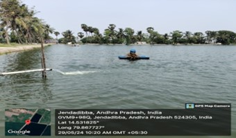
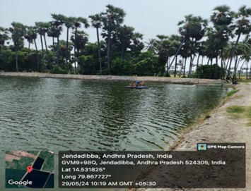

WEEKLY REPORT
WEEK- 3 (From 27-05-24 to 02-06-24)
Objective of the Activity Done:The main objective of this week is to know about Design & pond construction and Pond preparation stages.:
Detailed Report:
Day 1:
- A well-designed pond will facilitate the management of water exchange, harvesting of the product, waste collection and elimination, and feeding.
- Shape:
- > The shapes of pond that are found to be effective for shrimp culture are rectangular, square and circular. A well-designed pond is one that would allow circulation of the water such that wastes will be accumulated at the center of the pond. Some farmers improve the water movement in the square and rectangular ponds by making the corners of the pond rounded through addition of soil.
Day 2:
- Size:
- Smaller ponds are easier to manage but the construction and operation can be costly. Ponds of 0.5 -
1.0 ha . Are commonly used in intensive culture and 1-2 ha for semi-intensive culture.
Day 3:
- Water quality requirements :
- >The optimum range of water quality parameters are given below:
- Temperature : 30-34ºC
pH : 7.5-8.5
Transparency: 25-40 cm
Salinity : 5-40 ppt
DO :>4.5 ppm
Alkalinity : ~200 ppm
TAN : <0.1ppm
NO2-N : <0.1 ppm
NO3-N : <10 ppm
H2S : <0.1 ppm
Day 4:
- Stocking :
- >The hatchery produced PCR screened uniform sized SPF seed (PL- 12) from a certified hatchery is stocked in the pond after acclimatisation. The maximum permitted stocking density by CAA is 60 no/m2.

